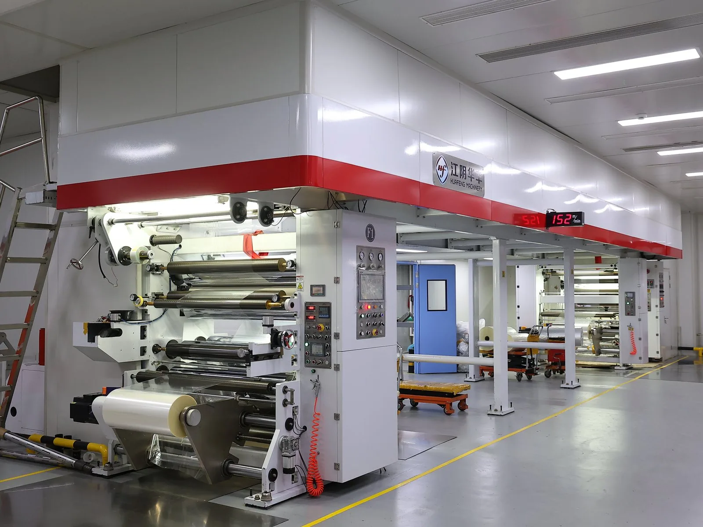

Roll film is what a form-fill-seal machine eats. Instead of buying finished pouches, the packing line forms, fills and seals the bag from a printed web, which is why the film has to match the machine as closely as it matches the product.

Sample shown for format reference only; any branding on the sample belongs to its respective owner. Production uses your own artwork and specifications.
Roll film is supplied to your machine: web width, core diameter, wind direction and splice method are set to the line rather than to a standard reel.
The film has to run on a specific machine, so the first specification is mechanical rather than decorative: web width, wind direction, core diameter, roll weight and whether the machine needs a splice at a registered position. Get those wrong and the line stops regardless of how good the print is.
Seal performance comes next. A VFFS machine forms the bag over a tube and seals the back seam and the end seals; the sealing layer has to seal at the machine's temperature, pressure and dwell, through the printed area where the design sits on the seam. That is why the print layout and the seal specification are decided together, and why a film that seals well on plain areas can still fail where heavy ink coverage meets the seam.
Slip and stiffness matter as much as barrier. Film that is too slippery will not track; film that is too stiff will not form cleanly over the shoulder. Where a product is abrasive or has sharp edges, the structure needs puncture resistance rather than only a higher barrier, and where the pack will be filled hot or sterilised, the sealing layer and the inks are specified for that process.
Printing is either digital or gravure, on the same terms as pouch work: digital for short runs and multiple designs, gravure for repeat volume and colour stability. Lamination, slitting and rewinding bring the web to the reel format your line expects.
Structures are chosen against barrier needs, shelf life, filling method and the destination market.
Indicative ranges for planning. Final thickness, size and structure are confirmed per order.
| Format | Printed laminated roll film, supplied to the machine's reel specification |
|---|---|
| Typical Structures | PET/PE, PET/VMPET/PE, PET/AL/PE, PET/NY/PE, retort-grade laminates |
| Web Width | Cut to your machine; confirmed from the forming shoulder or die width |
| Thickness | Structure-dependent, commonly 60–150 µm total; confirmed per product and machine |
| Printing | Digital printing for short runs and multiple designs; gravure for repeat volume |
| Registration | Eye mark printed and positioned for the machine's registration sensor |
| Applications | Snacks, coffee, pet food, powders, frozen food, sachets, flow-wrap packs |
| Customization | Web width, reel size, wind direction, seal type, structure and print |
Roll film is printed either digitally or by gravure. Digital suits short runs and designs that change, while gravure suits a fixed design at repeat volume and holds colour across runs. In both cases the print is registered to the seal pattern before production, because the seam runs through the printed area.
The workable minimum depends on the printing method and the reel specification rather than on a single figure. Digital printing makes shorter runs practical; gravure is set up around repeat volume. Send the machine type, web width, seal type, structure and expected annual consumption and we will confirm the minimum for your specification.
The points buyers usually check before a first order.
The machine type and model, the web width, the seal type (hot or cold), the reel diameter the machine accepts, the product, the target shelf life and the expected annual consumption. The print file comes after that, because the seal pattern constrains the layout.
Yes, provided we have the machine details. Web width, wind direction, core diameter and registration requirements are taken from your line, and the structure is chosen so the film forms and seals properly on that equipment.
Because the bag is formed and sealed inside the printed area. If the eye mark or the seal pattern is out of position, the seam lands on the wrong part of the design and the pack either looks wrong or fails to seal. Registration is fixed before production.
Yes, with retort-grade or hot-fill-rated structures, and the sealing layer and inks are specified for the process. The cycle and the machine conditions are confirmed first.
Yes. The same printed web can be converted into stand-up pouches, flat bottom bags or spouted pouches. Which route is cheaper depends on your volumes and whether you already run a packing line.
Send your machine type, web width, seal type and annual consumption — we will confirm a reel specification and quotation.